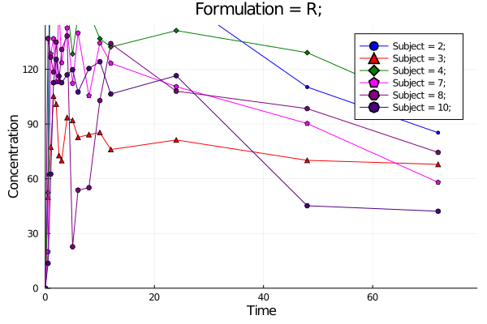
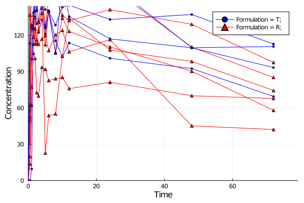
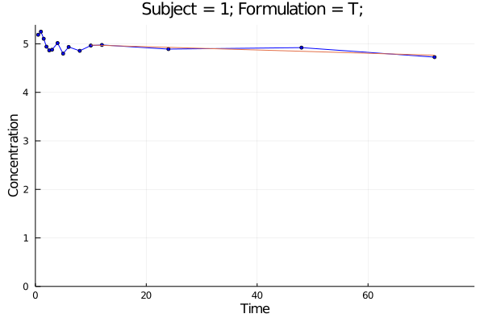
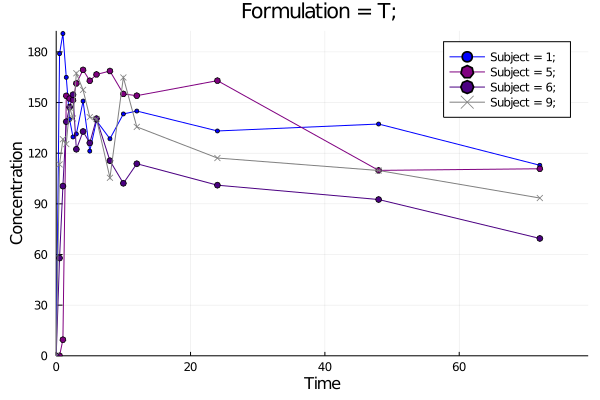
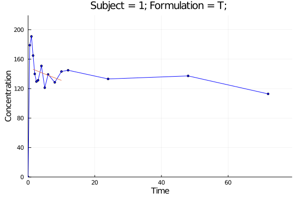

Examples
Import
using MetidaNCA, CSV, DataFrames;
pkdata2 = CSV.File(joinpath(dirname(pathof(MetidaNCA)), "..", "test", "csv", "pkdata2.csv")) |> DataFrame
ds = MetidaNCA.pkimport(pkdata2, :Time, :Concentration, [:Subject, :Formulation]; dosetime = MetidaNCA.DoseTime(dose = 100, time = 0))
sort!(ds, :Subject)DataSet: Pharmacokinetic subject
Length: 10
Subject 1: Dict{Symbol,Any}(:Subject => 1,:Formulation => "T")
Subject 2: Dict{Symbol,Any}(:Subject => 2,:Formulation => "R")
Subject 3: Dict{Symbol,Any}(:Subject => 3,:Formulation => "R")
Subject 4: Dict{Symbol,Any}(:Subject => 4,:Formulation => "R")
Subject 5: Dict{Symbol,Any}(:Subject => 5,:Formulation => "T")
Subject 6: Dict{Symbol,Any}(:Subject => 6,:Formulation => "T")
Subject 7: Dict{Symbol,Any}(:Subject => 7,:Formulation => "R")
Subject 8: Dict{Symbol,Any}(:Subject => 8,:Formulation => "R")
Subject 9: Dict{Symbol,Any}(:Subject => 9,:Formulation => "T")
Subject 10: Dict{Symbol,Any}(:Subject => 10,:Formulation => "R")
NCA
dsnca = MetidaNCA.nca!(ds, adm = :ev, calcm = :lint)
dsnca[:, :AUClast]10-element Array{Float64,1}:
9585.42175
10112.175500000001
5396.549749999999
9317.83575
9561.26
6966.598000000001
7029.5735
7110.674499999999
8315.080249999999
5620.8945Plotting
using Plots
p = MetidaNCA.pkplot(ds; typesort = :Subject, pagesort = nothing, sort = Dict(:Formulation => "R"))
png(p, "plot1.png")
p = MetidaNCA.pkplot(ds; typesort = :Formulation, pagesort = nothing, legend = true)
png(p, "plot2.png")
p = MetidaNCA.pkplot(ds; elim = true, ls = true)
png(p[1], "plot3.png")
p = MetidaNCA.pkplot(ds; typesort = :Subject, pagesort = :Formulation)
png(p[1], "plot4.png")Plot 1

Plot 2

Plot 3

Plot 4

Set dose time
dt = MetidaNCA.DoseTime(dose = 200, time = 0)
MetidaNCA.setdosetime!(ds, dt, Dict(:Formulation => "R"))
dsnca = MetidaNCA.nca!(ds)
dsnca[:, :Dose]10-element Array{Float64,1}:
100.0
200.0
200.0
200.0
100.0
100.0
200.0
200.0
100.0
200.0Set range for elimination
kr = MetidaNCA.ElimRange(kelstart = 4, kelend = 12, kelexcl = Int[5,6])
MetidaNCA.setkelrange!(ds, kr, [1,2,3])
dsnca = MetidaNCA.nca!(ds)
p = MetidaNCA.pkplot(ds[1]; elim = true)
png(p, "plot5.png")
getkeldata(ds[1])Plot 5

Without import
dsnca = MetidaNCA.nca(pkdata2, :Time, :Concentration, [:Subject, :Formulation]; dosetime = MetidaNCA.DoseTime(dose = 100, time = 0))
sort!(dsnca, :Subject)
dsnca[:, :AUClast]10-element Array{Float64,1}:
9585.42175
10112.175500000001
5396.549749999999
9317.83575
9561.26
6966.598000000001
7029.5735
7110.674499999999
8315.080249999999
5620.8945